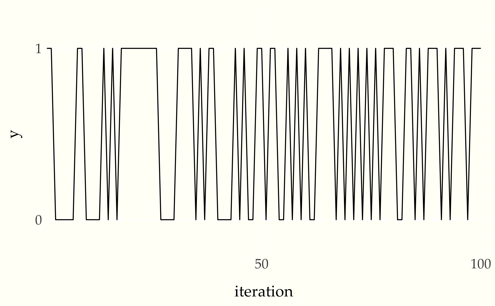
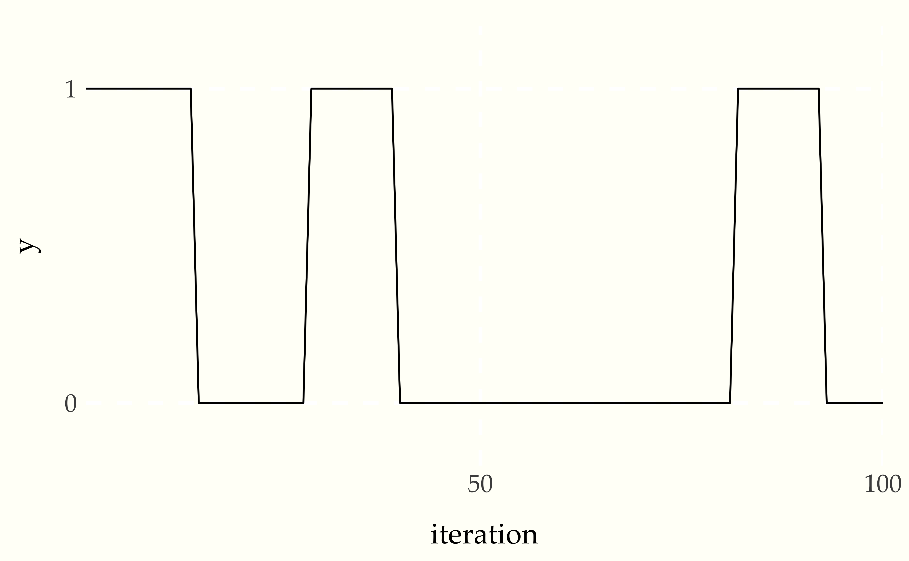
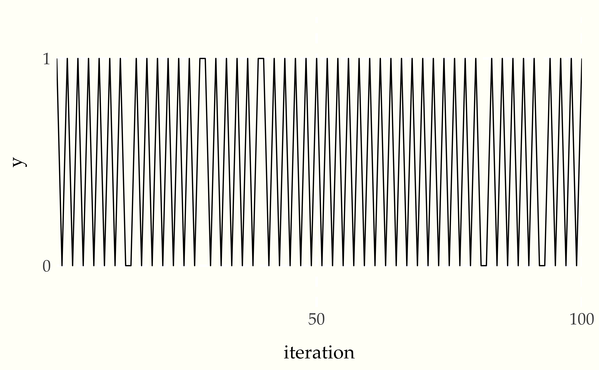
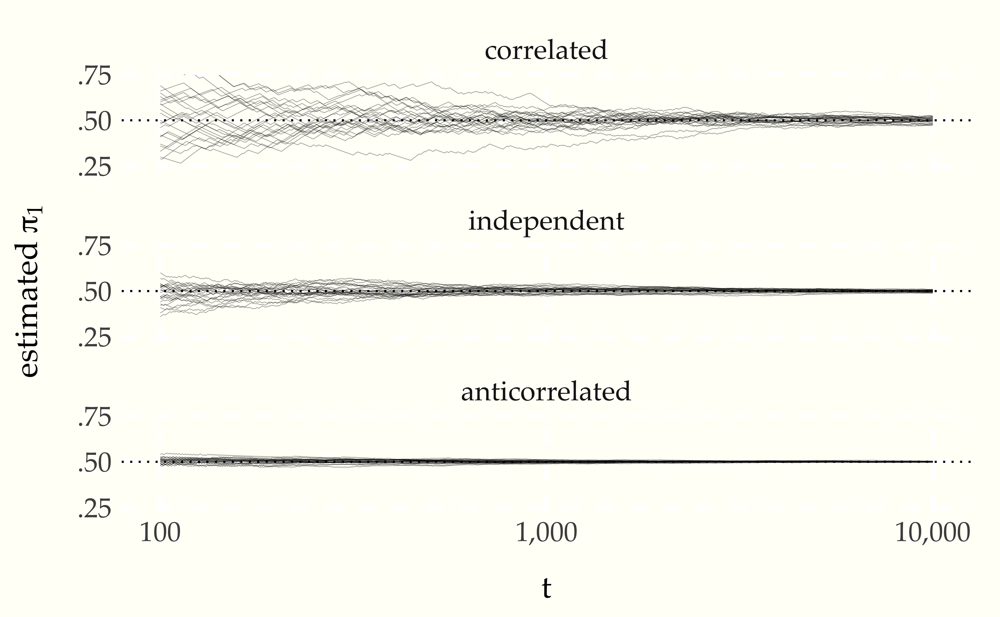

6 Stationary Distributions and Markov Chains
6.1 Stationary Markov chains
A random process \(Y = Y_1, Y_2, \ldots\) is said to be stationary if the marginal probability of a sequence of elements does not depend on where it starts in the chain. In symbols, a discrete-time random process \(Y\) is stationary if for any \(t \geq 1\) and any sequence sequence \(u_1, \ldots, u_N \in \mathbb{R}^N\) of size \(N\), we have
\[ p_{Y_1, \ldots, Y_N}(u_1, \ldots, u_N) = p_{Y_t, \ldots, Y_{t + N}}(u_1, \ldots, u_N) \]
None of the chains we will construct for practical applications will be stationary in this sense, because we would need to know the appropriate initial distribution \(p_{Y_1}(y_1)\). For example, consider the fishes example in which we know the trandition probabilities, but not the stationary distribution. If we run long enough, the proportion of pike stabilizes
6.2 Stationary distributions
Although we will not, in practice, have Markov chains that are stationary from \(t = 1\), we will use Markov chains that have stationary distributions in the limit as \(t \rightarrow \infty\). For a Markov chain to be stationary, there must be some \(q\) such that
\[ p_{Y_t}(u) = q(u) \]
for all \(t\), starting from \(t = 0\). Instead, we will have an equilibrium distribution \(q\) that the chain approaches in the limit as \(t\) grows. In symbols,
\[ \lim_{t \rightarrow \infty} \ p_{Y_t}(u) = q(u). \]
Very confusingly, this equilibrium distribution \(q\) is also called a stationary distribution in the Markov chain literature, so we will stick to that nomenclature. We never truly arrive at \(q(u)\) for a finite \(t\) because of the bias introduced by the initial distribution \(p_{Y_1}(u) \neq q(u)\). Nevertheless, as with our earlier simulation-based estimates, we can get arbitrarily close after suitably many iterations.96 The last section of this chapter illustrates rates of convergence to the stationary distribution, but the general discussion is in the later chapter on continuous-state Markov chains.
Reconsider the example of a process \(Y = Y_1, Y_2, \ldots\) of fishes, where 1 represents a pike and 0 a perch. We assumed the Markov process \(Y\) was governed by
\[ \begin{array}{rcl} \mbox{Pr}[Y_{t + 1} = 1 \mid Y_t = 1] & = & 0.20 \\[4pt] \mbox{Pr}[Y_{t + 1} = 1 \mid Y_t = 0] & = & 0.05 \end{array} \]
Rewriting as a probability mass function,
\[ p_{Y_{t + 1} \mid Y_t}(j \mid i) = \theta_{i, j}, \]
where \(\theta_{i, j}\) is the probabiltiy of a transtion to state \(j\) given that the process is in state \(i\). For the pike and perch example, \(\theta\) is fully defined by
\[ \begin{array}{rcl} \theta_{1, 1} & = & 0.20 \\ \theta_{1, 2} & = & 0.80 \\ \hline \theta_{2, 1} & = & 0.05 \\ \theta_{2, 2} & = & 0.95. \end{array} \]
These numbers are normally displayed in the form of a transition matrix, which records the transitions out of each state as a row, with the column indicating the target state,
\[ \theta = \begin{bmatrix} 0.20 & 0.80 \\ 0.05 & 0.95 \end{bmatrix}. \]
The first row of this transition matrix is \((0.20, 0.80)\) and the second row is \((0.05, 0.95)\). Rows of transition matrices will always have non-negative entries and sum to one, because they are the parameters to categorical distributions.97 Vectors with non-negative values that sum to one are known as unit simplexes and matrices in which every row is a unit simplex is said to be a stochastic matrix. Transition matrices for finite-state Markov chains are always stochastic matrices.
Now let’s take a really long run of the chain with \(T = 1\,000\,000\) fish to get a precise estimate of the long-run proportion of pike.
initial state = 0.000000; simulated proportion of pike = 0.059
initial state = 1.000000; simulated proportion of pike = 0.059The initial state doesn’t seem to matter. That’s because the rate of 5.9% pike is the stationary distribution. More formally, let \(\pi = (0.059, 1 - 0.059)\) and note that98 In matrix notation, if \(\pi\) is considered a row vector, then \[\pi = \theta \, \pi.\]
\[ \pi_i = \sum_{j = 1}^2 \pi_j \times \theta_{j, i}. \]
If \(\pi\) satisfies this formula, then it is said to be the stationary distribution for \(\theta.\)
If a Markov chain has a stationary distribution \(\pi\) and the initial distribution of \(Y_1\) is also \(\pi\), then it is stationary.
6.3 Reducible chains
The Markov chains we will use for sampling from target distributions will be well behaved by construction. There are, however, things that can go wrong with Markov chains that prevent them from having stationary distributions. The first of these is reducibility. A chain is reducible if it can get stuck in a state from which other states are not guaranteed to be revisited with probability one.
Figure 6.1: State diagram for a reducible finite Markov chain. The chain will eventually get stuck in state 3 and never exit to visit states 1 or 2 again.
If we start the chain in state 1, it will eventually transition to state 3 and get stuck there.99 State 3 is what is known as a sink state. It’s not necessary to get stuck in a single state. The same problem arises if state 3 has transitions out, as long as they can’t eventually get back to state 1.
Figure 6.2: State diagram for another reducible finite Markov chain. The chain will eventually get stuck in state 3 and 4 and never exit to visit states 1 or 2 again.
In this example, the chain will eventually fall into a state where it can only visit states 3 and 4.
6.4 Periodic chains
A Markov chain can be constructed to cycle through states in a regular (probabilistic) pattern. For example, consider the following Markov chain transitions.
Figure 6.3: State diagram for finite Markov chain generating periodic state sequences \(\ldots, 2, 3, 1, 2, 3, 1, 2, 3, 1, 2, \ldots\).
Regular cycles like this defeat the existence of a stationary distribution. If \(Y_1 = 2\), the entire chain is deterministically defined to be
\[ Y = 2, 3, 1, 2, 3, 1, 2, 3, 1, 2, 3, \ldots. \]
Clearly \(p_{Y_t} \neq p_{Y_{t+1}}\), as each concentrates all of its probability mass on a different value.
On the other hand, this chain is what is known as wide-state stationary in that using long-running frequency estimates are stable. the expected value is \(\frac{1 + 2 + 3}{3} = 2\) and the standard deviatiation is \(\sqrt{\frac{1^2 + 0^2 + 1^2}{3}} \approx 0.47\). More formally, the wide-state expectation is calculated as
\[ \lim_{T \rightarrow \infty} \ \frac{1}{T} \sum_{t=1}^T Y_t \rightarrow 2. \]
The definition of periodicity is more subtle than just deterministic chains. For example, the following transition graph is also periodic.
Figure 6.4: State diagram for finite Markov chain generating periodic state sequences alternatiing between state 1 and either state 2 or state 3.
Rather than a deterministic cycle, it cycles between the state 1 and the pair of states 2 and 3. A simulation might look like
\[ y^{(1)} = 1, 2, 1, 2, 1, 2, 1, 3, 1, 3, 1, 2, 1, 3, 1, 2, \ldots \]
Every other value is a 1, no matter whether the chain starts in state 1, 2, or 3. Such behavior means there’s no stationary distribution. But there is a wide-sense stable probability estimate for the states, namely 50% of the time spent in state 1, and 25% of the time spent in each of states 2 and 3.
6.5 Convergence of finite-state chains
In applied statistics, we proceed by simulation, running chains long enough that they provide stable long-term frequency estimates. These stable long-term frequency estimates are of the stationary distribution \(\mbox{categorical}(\pi)\). All of the Markov chains we construct to sample from target distributions of interest (e.g., Bayesian posterior predictive distributions) will be well-behaved in that these long-term frequency estimates will be stable, in theory.100 In practice, we will have to be very careful with diagnostics to avoid poor behavior due to floating-point arithmetic combined with approximate numerical algorithms.
In practice, none of the Markov chains we employ in calculations will be stationary for the simple technical reason that we don’t know the stationary distribution ahead of time and thus cannot draw \(Y_1\) from it.101 In the finite case, we actually can calculate it either through simulation or as the eigenvector of the transition matrix with eigenvalue one (which is guaranteed to exist). An eigenvector of a matrix is a row vector \(\pi\) such that \[c \times \pi = \theta \, \pi,\] where \(c\) is the eigenvalue. This is why Google’s PageRank algorithm is known to computational statisticians as the “billion dollar eigenvector.” One way to calculate the relevant eigenvector of a stochastic matrix is by raising it to a power, starting from any non-degenerate initial simplex vector \(\lambda\), \[\lim_{n \rightarrow \infty} \lambda \, \theta^n = \pi.\] Each \[\theta^n = \underbrace{\theta \times \theta \times \cdots \times \theta}_{\textstyle n \ \mbox{times}}\] is a transition matrix corresponding to taking \(n\) steps in the original transition matrix \(\theta\). What we need to know is conditions under which a Markov chain will “forget” its initial state after many steps and converge to the stationary distribution.
All of the Markov chains we will employ for applied statistics applications will be well behaved in the sense that when run long enough, the distribution of each element in the chain will approach the stationary distribution. Roughly, when \(t\) is large enough, the marginal distribution \(p_{Y_t}\) stabilizes to the stationary distribution. The well-behavedness conditions required for this to hold may be stated as follows
Fundamental Convergence Theorem. If a Markov chain \(Y = Y_1, Y_2, \ldots\) is (a) irreducible, (b) aperiodic, and (c) has a stationary distribution \(\mbox{categorical}(\pi)\), then
\[ \lim_{t \rightarrow \infty} \ P_{Y_t}(u) \rightarrow \mbox{categorical}(u \mid \pi). \]
What this means in practice is that we can use a single simulation,
\[ y^{(1)} \ = \ y^{(1)}_1, y^{(1)}_2, \ldots, y^{(1)}_T \]
to estimate the parameters for the stationary distribution. More specifically, if we define \(\pi\) by
\[ \widehat{\pi}_i = \frac{1}{T} \sum_{t = 1}^T \mathrm{I}[y_t^{(1)} = i] \]
then we can estimate the stationary distribution as \(\mbox{categorical}(\widehat{\pi}).\)
As a coherence check, we often run a total of \(M\) simulations of the first \(T\) values of the Markov chain \(Y\).
\[ \begin{array}{rcl} y^{(1)} & = & y_1^{(1)}, y_2^{(1)}, \ldots, y_T^{(1)} \\[4pt] y^{(2)} & = & y_1^{(2)}, y_2^{(2)}, \ldots, y_T^{(2)} \\[2pt] \vdots \\[2pt] y^{(M)} & = & y_1^{(M)}, y_2^{(M)}, \ldots, y_T^{(M)} \end{array} \]
We should get the same estimate from using \(y^{(m)}\) from a single simulation \(m\) as we get from using all of the simulated chains \(y^{(1)}, \ldots, y^{(M)}\).102 We’d expect lower error from using all of the chains as we have a larger sample with which to estimate.
6.6 How fast is convergence?
The fundamental theorem tells us that if a Markov chain \(Y = Y_1, Y_2, \ldots\) is ergodic (aperiodic and irreducible) and has a stationary distribution, then the distribution of \(Y_t\) converges to the stationary distribution in rhw limit. But it doesn’t tell us how fast.
As with everything else, we’ll go at this by simulation to establish intuitions. In particular, we’ll consider three chains that have \(\mbox{bernoulli}(0.5)\) as their stationary distribution (a fair coin toss).
First, we will consider a Markov chain producing independent Bernoulli draws.
Figure 6.5: State diagram for finite Markov chain generating independent draws.
Whether it is currently in state 0 or state 1, there is a 50% chance the next state is 0 and a 50% chance it is 1. Thus each element of the process is generated independently and is identically distributed,
\[ Y_t \sim \mbox{bernoulli}(0.5). \]
Therefore, the stationary distribution must also be \(\pi = (0.5, 0.5)\), because
\[ \begin{array}{rcl} \pi_1 & = & \pi_1 \times \theta_{1, 1} + \pi_2 \times \theta_{2, 1} \\[4pt] 0.5 & = & 0.5 \times 0.5 + 0.5 \times 0.5 \end{array} \]
and
\[ \begin{array}{rcl} \pi_2 & = & \pi_1 \times \theta_{1, 2} + \pi_2 \times \theta_{2, 2} \\[4pt] 0.5 & = & 0.5 \times 0.5 + 0.5 \times 0.5. \end{array} \]
We can simulate 100 values and print the first 99 to see what the chain looks like.
1 1 0 0 0 0 0 1 1 0 0 0 0 1 0 1 0 1 1 1 1 1 1 1 1 1 0 0 0 0 1 1 1
1 0 1 0 1 1 0 0 0 0 1 0 1 0 0 1 1 0 1 1 0 0 1 0 1 0 1 0 0 1 1 1 1
0 1 0 1 0 1 0 1 0 1 0 1 1 1 0 0 1 1 0 1 0 1 1 1 0 1 0 1 1 1 0 1 1An initial segment of a Markov chain \(Y = Y_1, Y_2, \ldots, Y_T\) can be visualized as a traceplot, a line plot of the value at each iteration.
Figure 6.6: Traceplot of chain producing independent draws, simulated for 100 time steps. The horizontal axis is time (\(t\)) and the vertical axis the value of e iteration number and the value is the value (\(Y_t\)).
The flat segments are runs of the same value. This Markov chain occassionally has runs of the same value, but otherwise mixes quite well between the values.
So how fast do estimates of the stationary distribution based on an initial segment \(Y_1, \ldots, Y_T\) converge to \(\frac{1}{2}\)? Because each \(Y_t\) is independent and identically distributed, the central limit theorem tells us that the rate of convergence, as measured by standard deviation of the distribution of estimates, goes down as \(\frac{1}{\sqrt{T}}\) with an initial segment \(Y_1, \ldots, Y_T\) of the chain goes down in error as \(\sqrt{T}\)
Now consider a Markov chain which is still symmetric in the states, but with a tendency to stay in the same state.
Figure 6.7: State diagram for correlated draws.
It has the same stationary distribution of 0.5. Letting \(\theta = \begin{bmatrix}0.9 & 0.1 \\ 0.1 & 0.9 \end{bmatrix}\) be the transition matrix and \(\pi = (0.5, 0.5)\) be the probabilities of the stationary distribution we see that the general formula is satisfied by this Markov chain,
\[ \begin{array}{rcl} \pi_1 & = & \pi_1 \times \theta_{1, 1} + \pi_2 \times \theta_{2, 1} \\[4pt] 0.5 & = & 0.5 \times 0.9 + 0.5 \times 0.1 \end{array} \]
The same relation holds for \(\pi_2\),
\[ \begin{array}{rcl} \pi_2 & = & \pi_1 \times \theta_{1, 2} + \pi_2 \times \theta_{2, 2} \\[4pt] 0.5 & = & 0.5 \times 0.1 + 0.5 \times 0.9 \end{array} \]
We can simulate from the chain and print the first 99 values, and then print the traceplot.
1 1 1 1 1 1 1 1 1 1 1 1 1 1 0 0 0 0 0 0 0 0 0 0 0 0 0 0 1 1 1 1 1
1 1 1 1 1 1 0 0 0 0 0 0 0 0 0 0 0 0 0 0 0 0 0 0 0 0 0 0 0 0 0 0 0
0 0 0 0 0 0 0 0 0 0 0 0 0 0 0 1 1 1 1 1 1 1 1 1 1 1 0 0 0 0 0 0 0Figure 6.8: Traceplot for chain with correlated draws.
As expected, there are now long runs of the same value being produced. This leads to much poorer mixing and a longer time for estimates based on the draws to converge.
Finally, we consider the opposite case of a symmetric chain that favors moving to a new state each time step.
Figure 6.9: State diagram for anticorrelated draws.
Sampling, printing, and plotting the values produces
1 0 1 0 1 0 1 0 1 0 1 0 1 0 0 1 0 1 0 1 0 1 0 1 0 1 0 1 1 0 1 0 1
0 1 0 1 0 1 1 0 1 0 1 0 1 0 1 0 1 0 1 0 1 0 1 0 1 0 1 0 1 0 1 0 1
0 1 0 1 0 1 0 1 0 1 0 1 0 1 0 0 1 0 1 0 1 0 1 0 1 0 0 1 0 1 0 1 0Figure 6.10: Traceplot of chain with anticorrelated draws.
The draws form a dramatic sawtooth pattern as as they alternate between zero and one.
Now let’s see how quickly estimates based on long-run averages from the chain converge in in a side-by-side comparison. A single chain is enough to illustrate the dramatic differences.
Figure 6.11: Estimate of the stationary probability \(\pi_1\) of state 1 as a function of \(t\) under three conditions, correlated, independent, and anticorrelated transitions. For each condition, 25 simulations of a chain of size \(T = 10\,000\) are generated and overplotted.
6.7 Reversibility
These simple Markov chains wind up being reversible, in that the probability of being in a state \(i\) and then transitioning to state \(j\) is the same as that of being in state \(j\) and transitioning to state \(i\). In symbols, a discrete-valued Markov chain \(Y = Y_1, Y_2, \ldots\) is reversible with respect to \(\pi\) if
\[ \pi_i \times \theta_{i, j} \ = \ \pi_j \times \theta_{j, i}. \]
Reversibility is sufficient for establishing the existence of a stationary distribution.103 If a discrete Markov chain is reversible with respect to \(\pi\), then \(\pi\) is also the unique stationary distribution of the Markov chain. Markov chains can have stationary distributions without being reversible.104 The reducible chains with we saw earlier are examples with stationary distributions that are not reversible. But all of the Markov chains we consider for practical applications will turn out to be reversible.